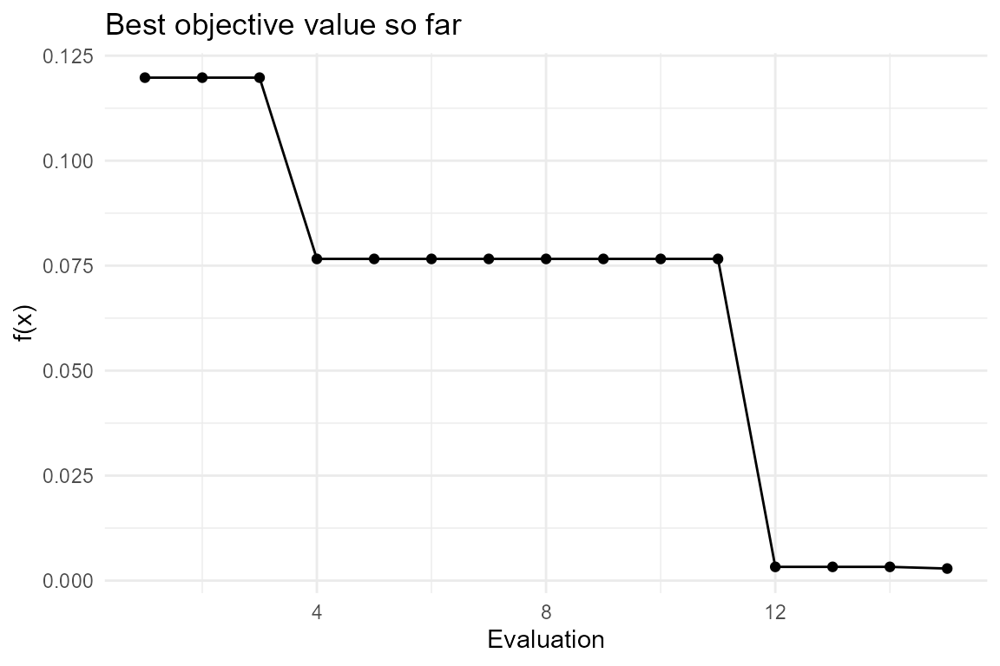

Bayesian Optimization with TabPFN
Source:vignettes/bayesian-optimization.Rmd
bayesian-optimization.RmdIntroduction
TabPFN can be used as a surrogate model for Bayesian optimization, following the PFNs4BO approach (Mueller et al., ICML 2023). Because TabPFN predicts a full distribution over the target rather than a single Gaussian posterior, the Expected Improvement (EI) acquisition function can be computed in closed form from the predicted logits — and, thanks to TabPFN’s differentiable inference path, EI is differentiable with respect to the candidate coordinates. This lets the optimizer refine its candidate points by gradient ascent on EI itself.
The rtabpfn package exposes two functions for this:
-
tab_pfn_bayesian_optimization()— a complete black-box optimization loop. -
tab_pfn_bo_suggest()— a single acquisition step for custom loops.
Requires the full
tabpfnpackage (>= 8.1.0) andtabpfn-extensions[bayesian_optimization]. Install withsetup_tabpfn(install_bayesian_optimization = TRUE).
Minimizing a known function
Let’s minimize a two-dimensional quadratic “bowl” whose minimum is
known, on the unit square defined by bounds:
objective <- function(x) {
(x["x1"] - 0.4)^2 + (x["x2"] - 0.6)^2 # true minimum at (0.4, 0.6), value 0
}Run the Bayesian optimization loop:
bo <- tab_pfn_bayesian_optimization(
fun = objective,
bounds = list(x1 = c(0, 1), x2 = c(0, 1)),
n_init = 5,
n_iter = 10,
maximize = FALSE, # we want to minimize
device = "auto" # GPU if available, CPU otherwise
)
bo$best_x## x1 x2
## 0.3882003 0.5477375
bo$best_y## [1] 0.002870605The optimizer should land near x1 = 0.4, x2 = 0.6 with a
value close to 0.
Tracking convergence
The returned X and y hold every point
evaluated by the objective. The best observed value so far is a running
minimum:
library(ggplot2)
best_so_far <- cummin(bo$y)
history <- data.frame(iteration = seq_along(best_so_far), best = best_so_far)
ggplot(history, aes(x = iteration, y = best)) +
geom_point() + geom_line() +
labs(title = "Best objective value so far", x = "Evaluation", y = "f(x)") +
theme_minimal()
A custom acquisition loop
If you need fine-grained control, drive the loop yourself with
tab_pfn_bo_suggest(). Note that X must be
scaled to [0, 1]^d and y negated when
minimizing:
set.seed(0)
d <- 2
X <- matrix(runif(4 * d), ncol = d) # 4 random initial points in [0,1]^2
y <- apply(X, 1, function(xi) -objective(setNames(xi, c("x1", "x2")))) # negate to maximize
for (i in 1:6) {
x_new <- tab_pfn_bo_suggest(X, y, device = "auto")
y_new <- -objective(setNames(x_new, c("x1", "x2")))
X <- rbind(X, x_new)
y <- c(y, y_new)
}
best_i <- which.max(y)
list(best_x_unscaled = X[best_i, ], best_y_negated = max(y))## $best_x_unscaled
## [1] 0.4103143 0.6130417
##
## $best_y_negated
## [1] -0.0002764705Notes
- The search domain is always the unit hypercube
[0, 1]^d; the conveniencetab_pfn_bayesian_optimization()scales yourboundsto and from this space automatically. - EI maximizes. Negate your objective when you want to minimize.
- Fits on a GPU are dramatically faster than on CPU;
device = "auto"picks the GPU when one is available.